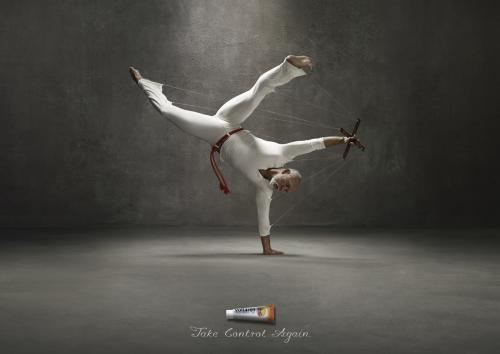

Капоэйра в подкастинге

Подка́стинг (англ. podcasting, от iPod и англ. broadcasting) — повсеместное, широкоформатное вещание) — процесс создания и распространения звуковых или видеопередач (то есть подкастов) во Всемирной сети. Как правило, подкасты имеют определенную тематику и периодичность издания, однако бывают и исключения.
Внимание вопрос: А что если нам записать серию подкастов о капоэйре?
Признаюсь честно, я сам немного балуюсь подкастингом и с ребятами мы записываем вполне популярный «Laowaicast». Идея делать подкаст о капоэйре у меня возникала несколько раз, но останавливает две вещи: 1) я ничего не знаю о капоэйре; 2) кто нас будет слушать?
Даже известный сайт Planet Capoeira собирался выпустить свой подкаст в 2007 году, но не получилось.
Тем не менее, несколько подкастов о капоэйре уже выходило, в том числе и на русском:
- «Citycast #16: Капоэйра» от беларуских подкастеров. В гостях Андрей, тренер капоэйры школы Grupo Axé Capoeira.
- ActiveLife#13 — выпуск подкаста, который рассказывает про брейкинг, акробатику, танцы и танцевальные события.
- VPC #3 Capoeira and Drums — подкаст от барабанщика-капоэйриста из группы Mundo
- Что-то от наших забугорных братьев.
- Кто-то из группы Senzala забил адрес capoeira.rpod.ru и выложил просто ритм беримбау. Может у них есть какие-то планы?